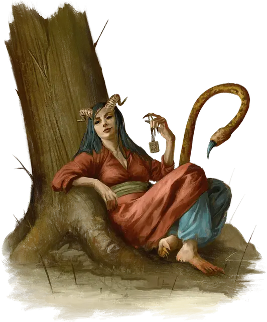

Хулгаз
Hulgaz
Большое Исчадие (Дьявол), законно-злое, именной НИП

Класс Доспеха 17 (природный доспех)
Хиты 190 (20к10 + 80)
Скорость 30 футов, летая 30 футов (парит)
| мод | спас | ||
|---|---|---|---|
| СИЛ | 17 | +3 | +3 |
| ЛОВ | 10 | +0 | +0 |
| ТЕЛ | 18 | +4 | +4 |
| мод | спас | ||
|---|---|---|---|
| ИНТ | 14 | +2 | +2 |
| МДР | 15 | +2 | +7 |
| ХАР | 20 | +5 | +10 |
Навыки Восприятие +7, Обман +10, Проницательность +7, Убеждение +10
Сопротивление урону дробящий, колющий, рубящий от немагических атак, кроме нанесённых посеребрённым оружием
Иммунитет к урону огонь, яд
Иммунитет к состояниям отравление, очарование
Чувства истинное зрение 120 футов, пассивное Восприятие 17
Языки Общий, Бездны, Телепатия 120 фт.
Опасность 14 (11500 опыта)
Бонус мастерства +5
Особенности
Легендарное сопротивление (3/день). Если Хулгаз проваливает спасбросок, он может вместо этого сделать спасбросок успешным.
Сопротивление магии. Хулгаз совершает с преимуществом спасброски от заклинаний и прочих магических эффектов.
Действия
Мультиатака. Хулгаз совершает две атаки Когтями и одну атаку Ядовитым жалом.
Когти. . Рукопашная атака оружием: +8 к попаданию, досягаемость 5 футов, одна цель. Попадание: 12 (2к8 + 3) рубящего урона.
Ядовитое жало. . Рукопашная атака оружием: +8 к попаданию, досягаемость 10 футов, одна цель. Попадание: 8 (1к10 + 3) колющего урона плюс 10 (3к6) урона ядом и цель должна преуспеть в спасброске Мудрости Сл 17, иначе станет очарованной до начала следующего хода Хулгаза.
Серные испарения (перезарядка 5-6). Хулгаз выдыхает 30-футовый конус отравляющего, обжигающе горячего пара. Каждое существо в этой области должно преуспеть в спасброске Телосложения Сл 17, иначе станет отравленным в течение 1 минуты. Будучи отравленным таким образом, существо получает 31 (7к8) урон огнём в начале каждого своего хода и с помехой совершает спасброски Мудрости. Цель может повторять спасбросок Телосложения в конце каждого своего хода, оканчивая на себе действие эффекта в случае успеха.
Использование заклинаний. Хулгаз накладывает одно из следующих заклинаний, не нуждаясь в материальных компонентах, используя Харизму в качестве базовой характеристики (Сл спасброска заклинания 18):
• Неограниченно: очарование личности [charm person]
• 2/день каждое: рассеивание магии [dispel magic], туманное облако [fog cloud]
• 1/день: телепортация [teleport]
Легендарные действия
Хулгаз может совершать 3 легендарных действия, выбирая из указанных ниже вариантов. Лишь одно легендарное действие может быть совершено за раз, и только в конце хода другого существа. Хулгаз восстанавливает истраченные действия в начале своего хода.
Атака. Хулгаз совершает одну атаку Когтями.
Очарование. Хулгаз накладывает заклинание очарование личности [charm person].
Отвергнутое сердце (стоит 2 действия). Хулгаз разрушает симпатию очарованных ею жертв. Она выбирает любое количество существ, которых может увидеть и которые очарованы ею. Каждая цель получает 17 (5к6) урона психической энергией, оканчивающий действие очарования, наложенного Хулгаз.
Описание
Хулгаз - неотразимый антагонист для групп, которым нравятся ролевые игры и социальные встречи, особенно если им может понравиться перспектива заключить сделку с дьяволом.
Хотя ее блок статистики используется в случае сражения, Хулгаз лучше всего использовать в качестве повторяющегося противника в социальных столкновениях. Ее основным средством развращения смертных является предложение им манящих благ, называемых Инфернальными благословениями.
Когда персонаж привлекает внимание Хулгаз, она или её слуги сталкиваются с персонажем и предлагают дар. Но любой предлагаемый дар, делает своего получателя несчастным. Даже те, кто предпочитает не участвовать в схемах Хулгаз, в конечном итоге страдают от ее рук.
Отыгрыш Хулгаз
Хулгаз одновременно остроумна, словоохотлива и терпелива. Она говорит спокойным, низким голосом, а ее движения грациозны и продуманны. Каждое её пожатие плечами или движение пальцем - это хорошо отрепетированная уловка, жест, который она используют как оружие, чтобы застать своих жертв врасплох.
Хулгаз - заклинатель как в обычном, так и в магическом смысле. Она без особых усилий завоевывает расположение, инстинктивно выбирая наиболее эффективную тактику в любом разговоре. Это может означать, что в один момент вы сочувственно выслушаете просителя с заплаканными глазами, а через несколько секунд от души посмеетесь над неудачной шуткой шутника.
Каким бы ни было её внешнее поведение, любая кажущаяся доброта, которую предлагает Хулгаз, является исключительно средством для реализации ее злых замыслов: развращения смертных душ. Если у нее и есть с то, помощью чего узнать её намерение, так это ее длинный, похожий на змею хвост. В разгар переговоров с особенно соблазнительной будущей жертвой, Хулгаз не может удержаться от того, чтобы не помахать хвостом взад-вперед от возбуждения.
Самоотверженные герои и истинные святые вызывают интерес у Хулгаз, потому что ей нравится извращать и осквернять души таких благородных существ. Она реагирует на непоколебимых благодетелей удвоением своих усилий по их развращению.